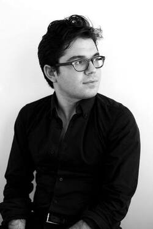

JACOB A. GREENBERG is a New York-based playwright, lyricist, and composer. His play The United States vs. Khalid Sheikh Mohammed has been in development with Utah Shakespeare Festival, was featured by the American Theatre Wing in their video series, and has received multiple industry readings and workshops. His theatrical work has included readings and showcases of musicals in development in New York City, including The Invisible Hand and Pax Americana. His screenplay Where I'm Kept advanced in the Austin Film Festival and ScreenCraft Horror/Thriller screenwriting competitions. As a composer, his classical music and art songs have been performed across Europe and America, including the International Hilde Zadek Competition at the Musikverein in Vienna, where "Paint Me With Violence" from Four Songs for Mezzo-Soprano and Orchestra was selected to be sung by Grand Prize winner Raehann Bryce-Davis. Past premiers include orchestral works, chamber operas, and musical theater pieces. Jacob is currently in the BMI Lehman Engel Advanced Musical Theater Workshop, and received a B.A. in Music with honors and Philosophy from Brown University, and a Masters of Music Composition from the Manhattan School of Music, where he studied with Richard Danielpour.